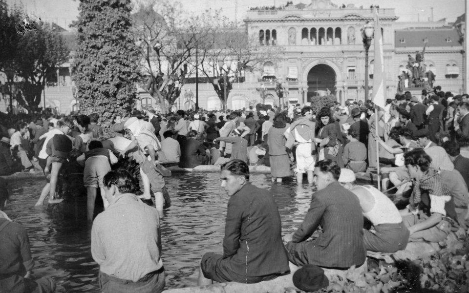

Una multitud obrera copa la Plaza de Mayo y obtiene la libertad de Perón
Columnas de trabajadores llegadas desde los suburbios industriales ocuparon el centro de Buenos Aires exigiendo la liberación del coronel, detenido en la isla Martín García. Cerca de la medianoche, Perón salió al balcón de la Casa Rosada.

Buenos Aires vivió una jornada sin precedentes en su historia política. Desde la madrugada, columnas de obreros de los frigoríficos de Berisso, de los talleres de Avellaneda y de todo el cordón fabril cruzaron a pie los puentes del Riachuelo y marcharon hacia la Plaza de Mayo al grito de un solo nombre: Perón. No los convocó ningún partido; los convocó el temor de perder lo ganado —aguinaldo, vacaciones pagas, tribunales de trabajo— con la caída del hombre que desde la Secretaría de Trabajo les dio existencia pública.
El coronel Juan Perón, obligado a renunciar a todos sus cargos el día 9 por la presión de sus camaradas de armas y detenido luego en la isla Martín García, se había convertido en el centro de una pulseada que hoy resolvió la calle. Ante una plaza desbordada que no se movía —decenas de miles de hombres y mujeres que refrescaban los pies en las fuentes y coreaban consignas bajo el sol—, el gobierno militar cedió: Perón fue traído a la ciudad y, cerca de la medianoche, apareció en el balcón de la Casa de Gobierno junto al presidente Farrell.
La crónica debe fechar el origen de esta jornada dos años atrás, cuando un coronel poco conocido pidió para sí una oficina que nadie ambicionaba: el viejo Departamento Nacional del Trabajo, que él convirtió en Secretaría y en palanca. De allí salieron el estatuto del peón de campo, los tribunales del trabajo, las vacaciones pagas y los convenios firmados de igual a igual entre sindicatos y patrones, novedades que las cámaras empresarias denunciaron como demagogia y que los trabajadores contabilizaron con otra aritmética. La CGT había votado una huelga general para mañana 18; la calle, como suele, se adelantó a sus dirigentes y la hizo hoy por su cuenta.
Las estampas del día quedarán en el anecdotario del país: los puentes del Riachuelo, levantados por orden superior, no detuvieron a nadie, que a la Plaza se llegó en balsa, a nado y colgado de los tranvías; y las fuentes sirvieron para refrescar los pies doloridos de tanta caminata, para escándalo de los balcones del centro y bautismo político de los recién llegados. No hubo saqueos ni sangre: hubo asado en las veredas, cánticos con nombres nuevos y una paciencia de piedra que duró hasta la medianoche. Cuando el hombre salió por fin al balcón, la multitud encendió millares de antorchas hechas de diarios enrollados: los que miraban desde las ventanas dicen que la ciudad parecía arder sin quemarse.
Habló como quien ya no es coronel sino otra cosa que todavía no tiene nombre: pidió calma, anunció que pasa a retiro del Ejército y llamó a los trabajadores «esa masa sufriente que es la esperanza de la patria». La multitud se retiró de madrugada, pacífica y dueña de la ciudad. Los observadores coinciden en que la política argentina quedó partida en dos esta noche, aunque discrepan —y discreparán por décadas— sobre qué significa exactamente lo que acaba de nacer.